Cerf-Volant Mania à Stella-Plage

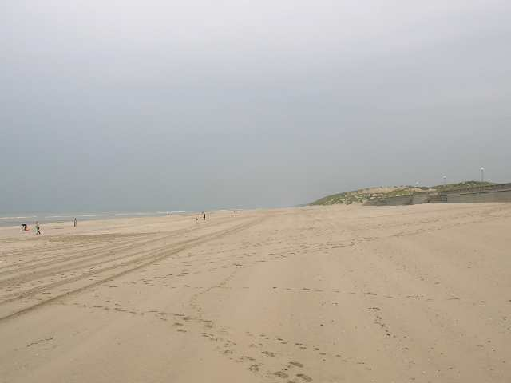
La petite plage de Stella... Au fond, c'est Le Touquet, mais la plage continue encore au delà. De l'autre coté, on voit Berck. C'est dire si on n'est pas gênés !

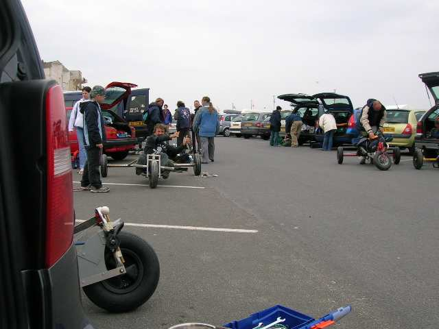
Arrivée, atelier de mécanique pour monter les chars à voile, les caisses à clous sont sorties chez les Pirates et les Gwenn Ha Du... Météo : moyenne, un peu crachineuse par moments...

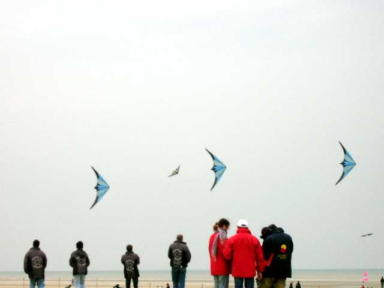
Ce matin, pour les pilotables, c'est la Précision... Pour les Tatoueurs, un petit problème : sortis ou pas sortis ? Certains les ont vu sortir, les juges viennent demander au public... Y a pas de juges de lignes, alors ils ont du mal à savoir... Suspense !

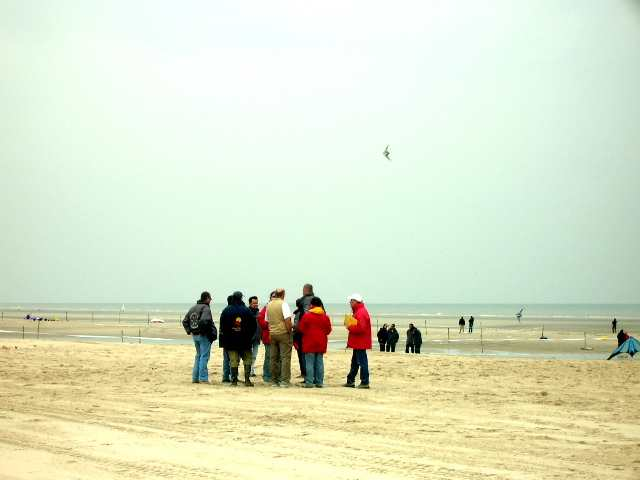
La discussion est longue... Sont juste un peu sortis, et un seul, et pas longtemps, et puis il n'y a pas de juges de ligne, et puis il faut qu'ils aillent au championnat du monde en Amérique... Alors ? Tout bien pesé, ils seront classés, mais on a dû leur enlever des points, ils seront seulement cinquièmes.

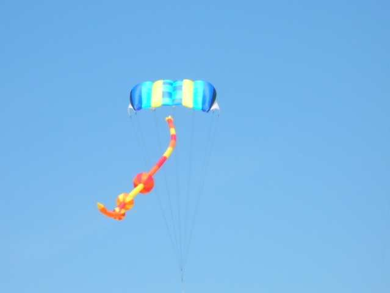
Tout ça n'empêche pas les monofils de monter...

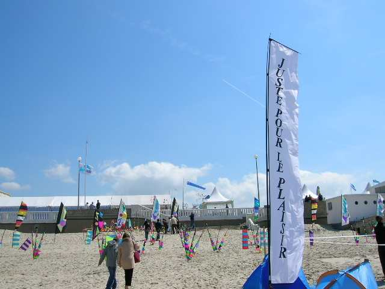
Le club de Plaisir est présent avec ses tentes et ses bannières.

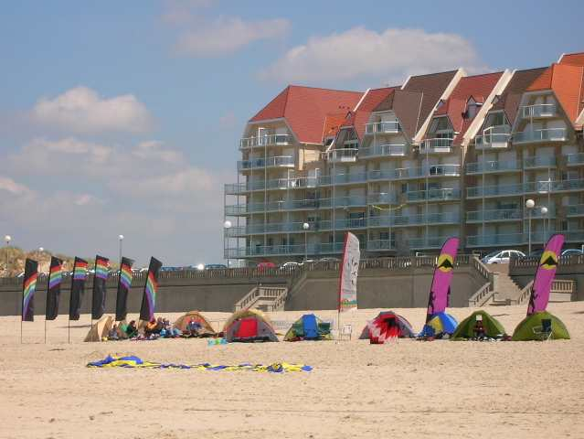
Les Hurricane sont venus aussi en nombre et ont monté un beau camp, mais aussi de grands cerfs-volants, bien sûr, devant la petite villa de Stella, bien embêtante quand le vent vient de terre.

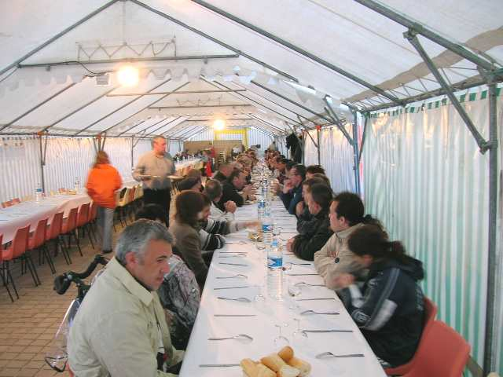
Samedi soir repas sous la tente... Les 2 tables seront pleines, et vous voyez la longueur ! Les autres repas ne sont offerts qu'aux compétiteurs (non non, pas aux autres cervolistes)...

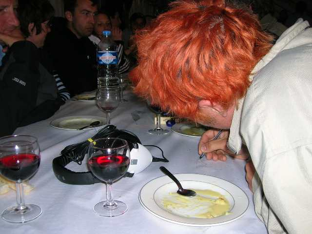
Un FLIC a fait le déplacement, avec sa toison rouge...

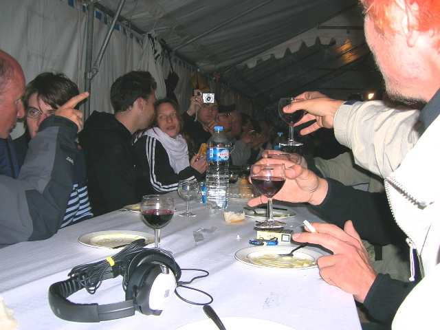
Il présentera même une petite routine de consommation à base de verres de rouge !

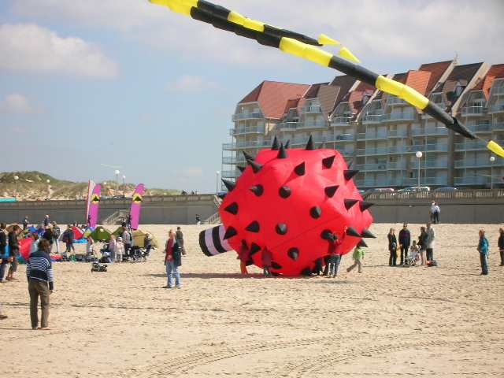
Dominique a sorti son Fugu hérisson...

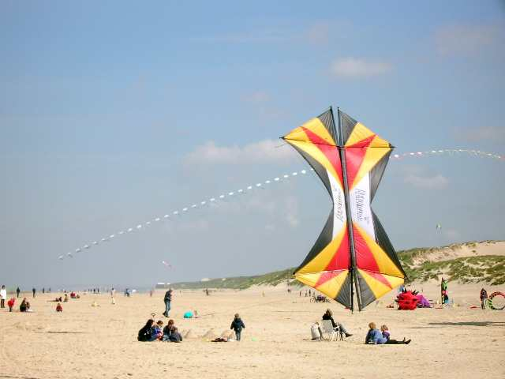
On verra de beaux cerfs-volants, mais saurez-vous reconnaître celui-ci ?

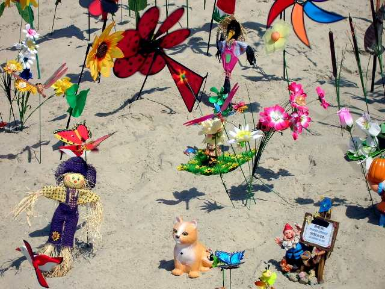
Aussi des Jardins du Vent (zut, j'avais oublié qu'il faut plus dire ça, pardon) dont celui-ci, rarement vu, mais peu d'autres, à part la boutique où Jean-Claude découpe ses petites bouteilles avec toujours autant de succès.

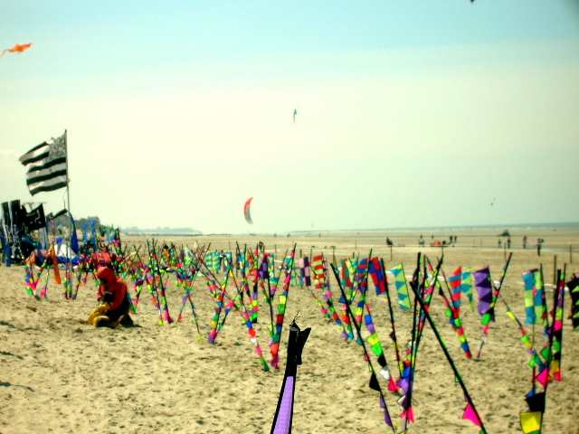
Dominique n'a pas pleuré les petites bannières pour décorer la plage...

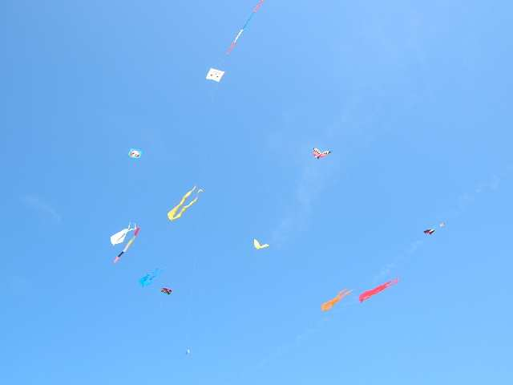
En haut, un beau ciel bleu, ce dimanche, et du vent, et du monde en l'air !

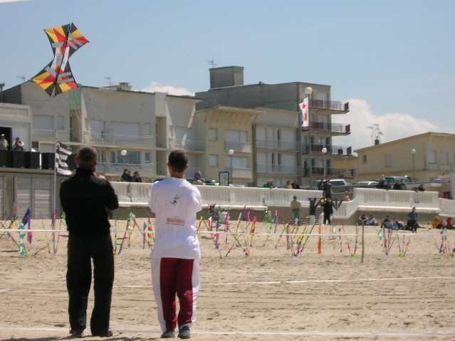
Bon, la solution de la première énigme, pour ceux qui n'avaient pas trouvé (sont pas forts, c'était pas dur !). Il s'agit de 2 révos maniés par Fabrice et Jéremy. A partir de cette position, ils préparent une sortie en flic-flac, mais y a encore du travail...

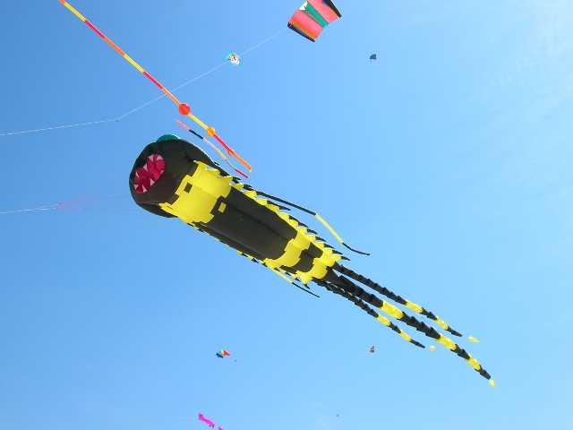
Ce nouveau Mégabite jaune et noir est très impressionnant !

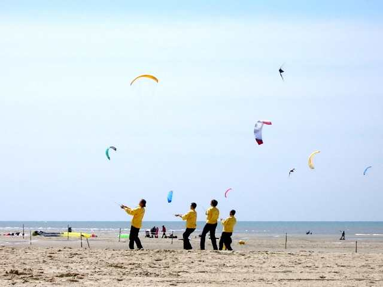
Les Tame Bird étaient présents et ont sorti une belle routine, avec le beau temps et le vent idéal ce jour là.

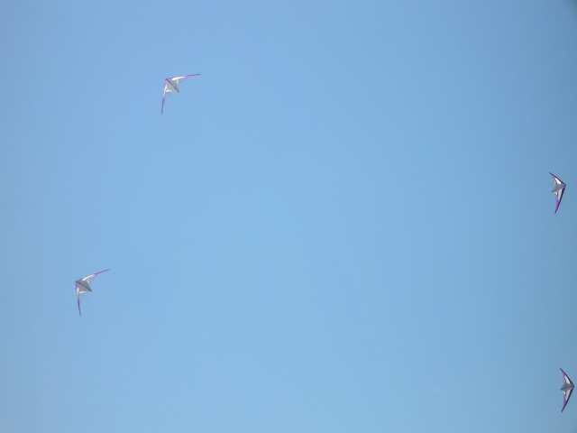
Un bel éclatement...

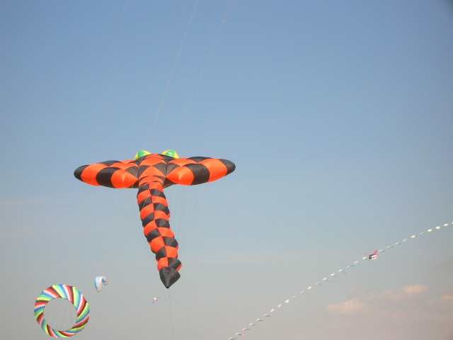
On reverra la grande raie cousue par son propriétaire tout seul...

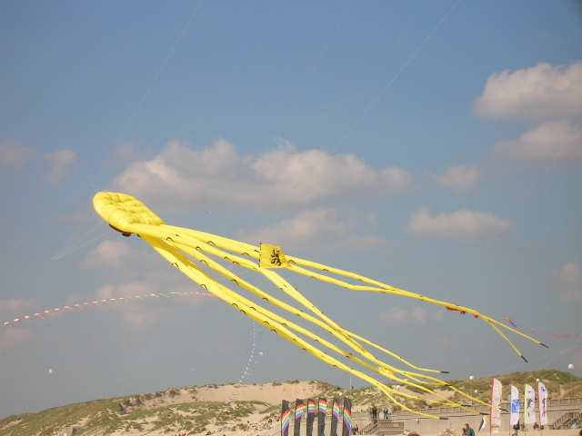
Une pieuvre qui doit avoir les mêmes parents que le mégabite...

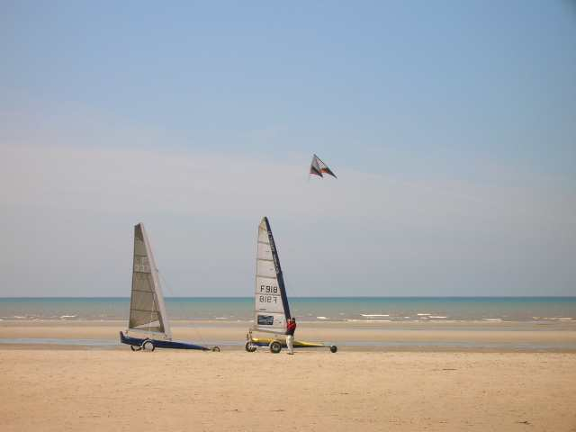
Même des chars à voile (y a des compèts en ce moment) ont fait une pause pour admirer nos cerfs-volants...

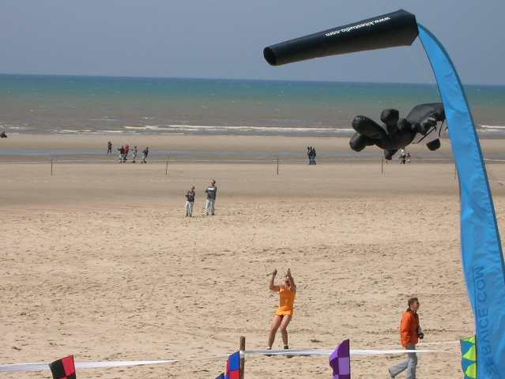
Nous avons même eu droit à la visite de Ulla et ses copines, mannequins de mode, qui ont tâté de la Nasa malgré leur tenue peu adaptée. Reconnaîtrez-vous celle en mini orangée, là au milieu ?

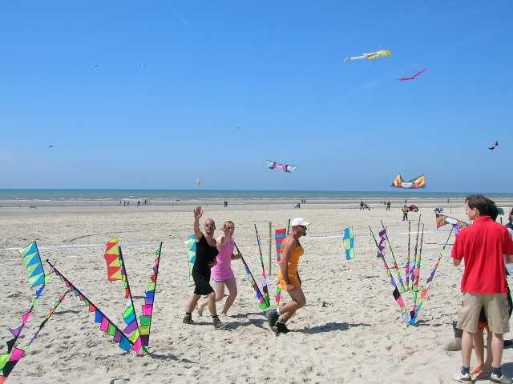
Bon, allez, je vous le dis, ce sont William, Ivan et un troisième en rose, j'étais trop loin pour le reconnaître.

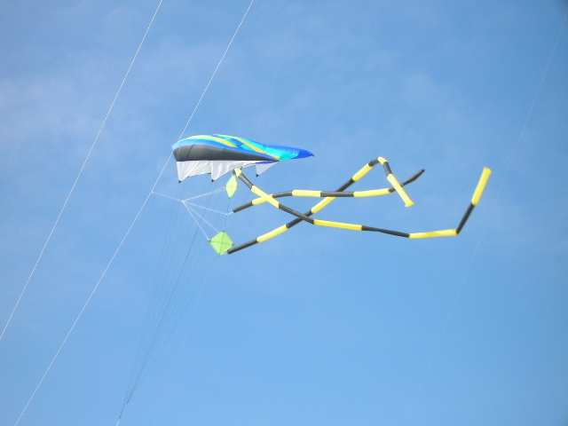
Encore du jaune et noir, cette majestueuse queue entraînée par son moulinet.

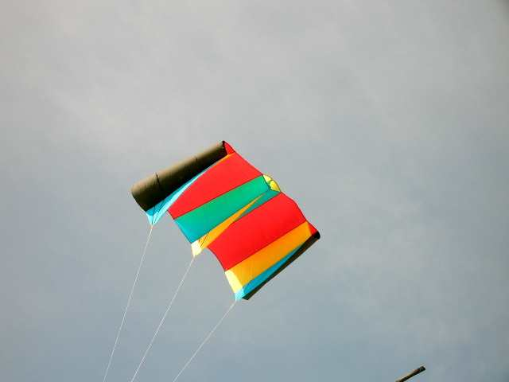
Un Sled gonflable de stabilisation de gros... gonflables, mais beau en lui-même, et bien plus stable qu'un flow-from...

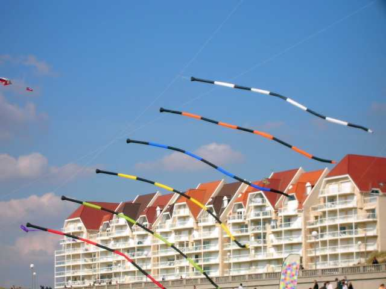
Un rideau de queues, des crayons de Régis Bécue.

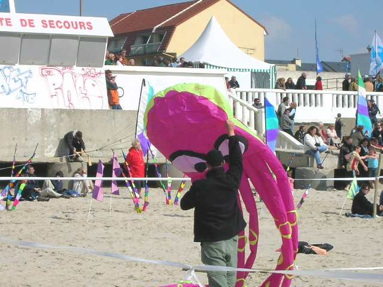
Une petite pieuvre, regarde son maître de ses grands yeux tristes, mais un peu inquiétants quand même...

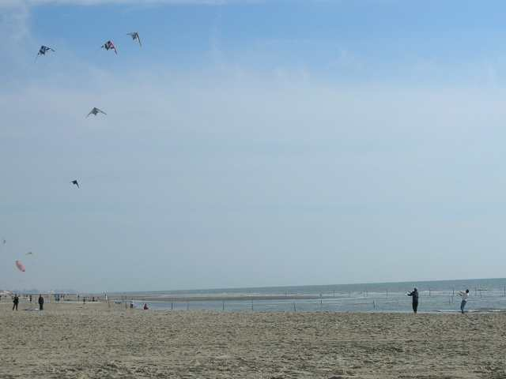
Un spectacle de qualité, aussi : si vous comptez les cerfs-volants en vol, il y a en a 5 pour 2 pilotes seulement ! Pourtant ce ne sont pas des trains ! Pas banal, hein ?

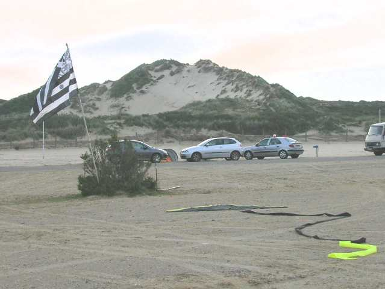
Le soir, remise des prix quand même, c'est Richard Debray qui gagne en individuel. Ensuite, nuit calme au terrain de camping... pour ceux qui dorment loin des tractionnistes ! Au matin, des traces d'un vol de nuit animé, les verres sont encore sur le toit de l'auto !
Mais juré, ça n'est ni les Pirates, ni les Gwenn Ha Du ! Au fond, la grande dune, siège d'une escalade en règle la veille au soir, certains fous hissant même des chars pour redescendre... en cascade !

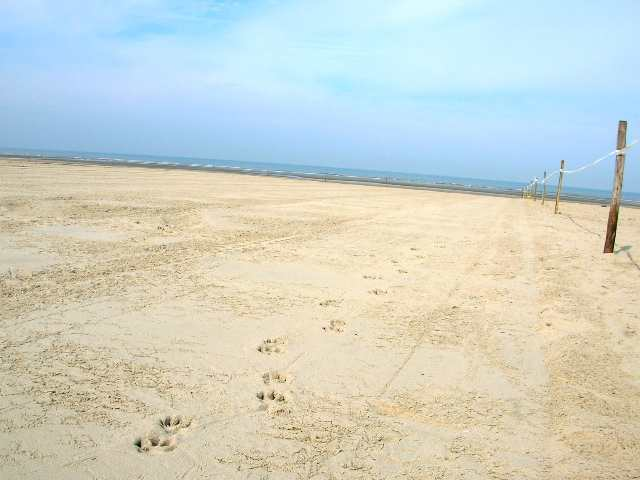
Au matin, encore beau temps et tout petit vent, plus grand monde pour voler, ils travaillent, bien sûr !

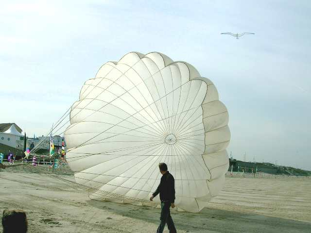
Dominique gonflera bien un parachute, mais ce sera la seule fois de la journée, sauf quand les Gwenn Ha Du courront avec. Phrase banale, mais essayez !

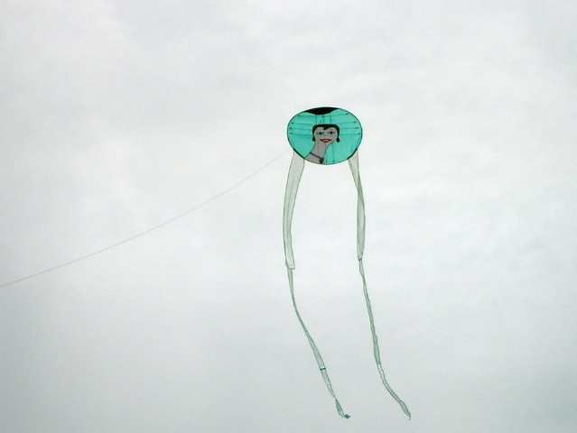
Emmanuel fait voler sa jolie parisienne ultra-légère...

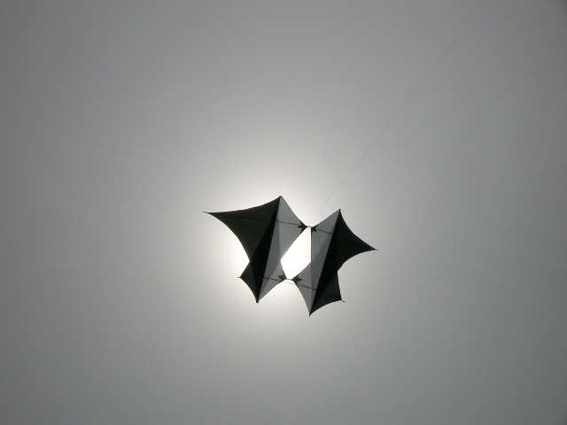
Ce Lundi, donc, ciel voilé, le soleil discret révèle pourtant la structure de ce cerf-volant noir et blanc, mais pas de Jean-François.

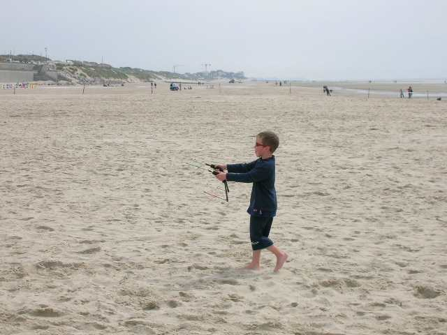
Ce jeune homme fait voler un révo, et il ne fait pas semblant. Avec un 2 lignes, il passe les cascades d'axels avec une aisance déconcertante !

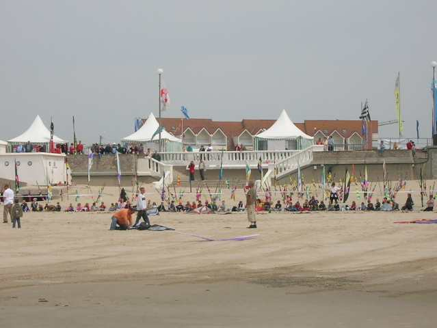
L'après-midi, pour obliger les cervolistes à se remuer, les écoles du coin sont venues participer. Démonstrations et initiations de Nasas, de pilotables 2 et 4 lignes, de Spiralier et envol de Megoel. Dominique leur a prêté des cerfs-volants et nous les nôtres, et ça a couru ! Ensuite, concours de démêlage entre les cervolistes...

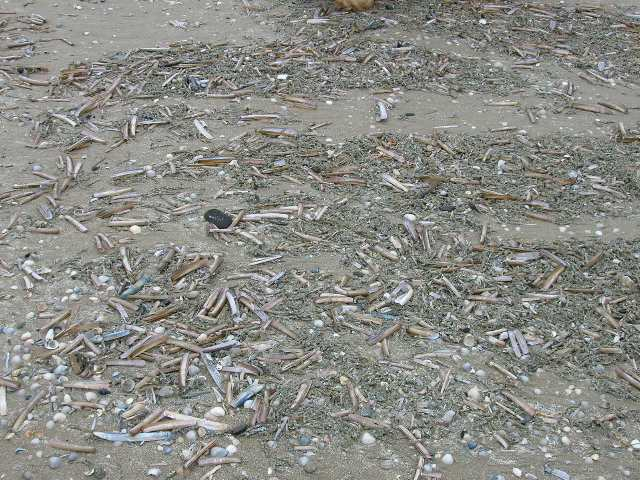
Mais finalement, ce Lundi bizarre s'est terminé progressivement faute de vent et d'acteurs. La mer a repris ses droits, la marée a déposé ses trésors...